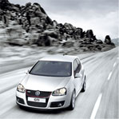

公司简介-正文
广州华跃汽车用品厂是一家集设计、生产、内销、外贸于一体的汽车布艺专业生产企业。公司本着“领导健康车饰新潮流、全力打造中国汽车布艺第一品牌”的信念，不断的矢 志追求，开创以天然、时尚、优美、舒适化为主导的“雅然轩”品牌。在短短几年时间内已成功开发出广受客户喜爱的上千款产品。产品主要有：天然薰衣草抱枕、天然薰衣草颈枕、天然油柑叶颈枕、多功能空调被、天然保健汽车坐垫、天然保健汽车坐套、天然香薰饰品、车标CD盒等。
本着以人为本的管理经营方针，提供让客户满意的产品为服务宗旨，经过几年的不断完善与发展，已经建立了良好的市场销售体系，在业内享有较高的知名度。“雅然轩”品 牌，以多元化的风格、高档市场定位共同打造中国汽车布艺市场，推动着中国汽车布艺行业的不断成长与辉煌。
二、产品类型
为体现“雅车饰”的高端品牌价值，树立品牌形象，在原材料的选用和生产制作工艺上都是精益求精。同时，配合时尚、个性的设计理念，给您的新车增添更多的内涵。
- A系列皮。精选高档汽车专用黄牛头层皮做面料，触感光滑柔软，皮纹细致，天然机理，清新自然，透气性佳，符合各类检测标准，保用期限36个月。是追求高品质生活的成功人士的首选。
- B系列皮。精选专用高档二层黄牛皮做面料，触感舒适，皮纹清晰，弹性适中，透气性良好。保用期限18个月。
- C系列皮。选用国际先进技术成果产品——超纤皮做面料，它皮纹自然，触感柔软舒适，弹性好，色泽柔和，透气性好，符合环保标准。在防水、防霉等方面甚至要超过真皮，保用期限为36个月。是国际上体现环保概念的新型材料使用潮流。
- S系列皮。选用优质PU合成皮做面料，触感光滑，弹性好，外观和谐大方，环保自然。保用期限为18个月考虑到经销商的运营成本，在制作工艺上可根据国际惯例，在材料的使用上采用A+B的模式，即在汽车座椅中人体接触的部分采用A类皮，其他部分（包括门皮）采用颜色和纹路基本一致的B类皮做面料，以低于纯A类皮、高于纯Ｂ类皮的价格提供给客户。
如果时间允许，公司可根据客户要求，专为其设计打造一款时尚、舒适高档、独具个性的坐套，彰显车主尊贵而又前卫的人文生活。